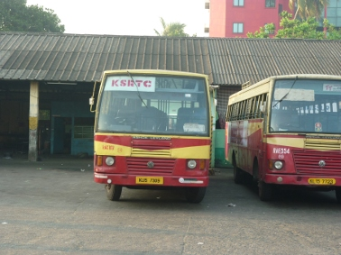

<div class="container">

	<!-- Main block -->
	<div class="row">

		<div class="span6">
		<h1>ACBuS</h1>
		<p>ACBuS is an open source hardware based automotive communication bus sniffer made for sniffing and also analysisng protocols like CAN, FlexRay etc. Complete source code and hardware designs of this project are freely available.</p>
		<p>The protocols used for communication in automotives are open and well documentation is available in the Internet. But the traffic analyser for such automotive protocols are costlier and not open. This project aims to design such protocol analyser for sniffing and analysing the automotive communication bus traffic and tools for analysing them.</p>
		<p>The main target will be to build complete open hardware based communication protocol ananlyser hardware. The firmware used in these hardwares will be released based on free software licenses. With this openness of the project, anyone can use the design available here for further modification and better development of this project. a minimalistic software will be available for the analysis of the measuremnet on the host(PC) side. Initial priority is of rthe hardware. Once the hardware and its associated software firmware is running, the analyser software on the host side will be developed.</p>
		<p>ACBuS is an project for educational purpose of Automotive protocols. ACBus is not responsible for any damamges caused !</p>
		</div>

		<div class="span6">
		<p></p>
		</div>

	</div> <!-- /Main block -->

</div> <!-- /container -->
